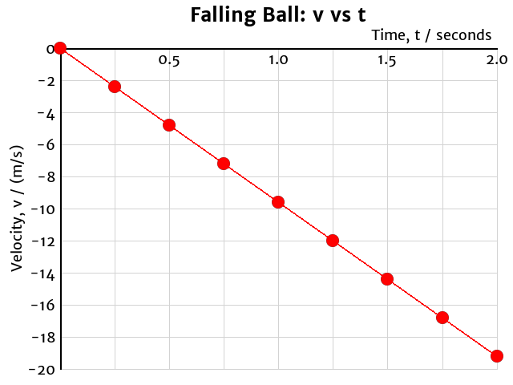

Acceleration
We learned in earlier lessons that velocity is the rate at which an object’s position changes.
$$\vec{\mathbf v} = {\Delta\vec{\mathbf d}\over \Delta t}$$
- Velocity equals the slope of a graph of \(\vec{\mathbf d}\) versus \(t\).
Acceleration measures how quickly the velocity changes:
$$\vec{\mathbf a} = {\Delta\vec{\mathbf v}\over \Delta t}$$
- Acceleration is a vector.
- The SI unit of velocity is (m/s)/s, or m/s2.
- An acceleration of +1.0 m/s2 means that each second, the velocity changes by 1 m/s in the positive direction.
- On Earth, when there are no forces except gravity, the acceleration will be –9.81 m/s2.

- If we graph the velocity against time, the slope will equal the acceleration.
- We cannot directly calculate the acceleration from a position versus time graph, because the graph will be curved for accelerated motion.
Example 1
Calculate the acceleration of the ball based on the graph.
Identify the variables from the graph:
- \(t_i = \mathrm{0.0\ s}\)
- \(t_f = \mathrm{2.0\ s}\)
- \(\vec{\mathbf v}_i = \mathrm{0.0\ m/s}\)
- \(\vec{\mathbf v}_f = \mathrm{-19.2\ m/s}\)
- \(\vec{\mathbf a} =\ ?\)
Select the relevant relationship (equation) and evaluate:
$$\vec{\mathbf a} = {\Delta \vec{\mathbf v}\over \Delta t} = \mathrm{-19.2\ m/s - 0.0\ m/s \over 2.0\ s - 0.0\ s} = \mathrm{-9.6\ m/s^2}$$
- Is the answer reasonable?
Example 2
A car is travelling at 60.0 km/h. How long will it take to accelerate to 80.0 km/h is the car can accelerate at a rate of 3.00 m/s2?
Identify the variables and convert to standard SI units:
- \(\vec{\mathbf v}_i = \mathrm{+60.0\ km/h = +16.7\ m/s}\)
- \(\vec{\mathbf v}_f = \mathrm{+80.0\ km/h = +22.2\ m/s}\)
- \(\vec{\mathbf a} = \mathrm{+3.00\ m/s^2}\)
- \(\Delta t =\ ?\)
Select the relevant relationship (equation):
$$\vec{\mathbf a} = {\Delta \vec{\mathbf v}\over \Delta t}$$
Rearrange the equation to isolate the unknown:
$$\vec{\mathbf a}\color{red}{\Delta t} = {\Delta \vec{\mathbf v}\over \Delta t} \color{red}{\Delta t}$$
$$\vec{\mathbf a}\Delta t = \Delta \vec{\mathbf v}$$
$${\vec{\mathbf a}\Delta t \over \color{red}{\vec{\mathbf a}}} = {\Delta \vec{\mathbf v} \over \color{red}{\vec{\mathbf a}}}$$
$$\Delta t = {\Delta \vec{\mathbf v} \over \vec{\mathbf a}}$$
Evaluate, including units:
$$\Delta t = \mathrm{+22.2\ m/s - (+16.7\ m/s) \over +3.00\ m/s^2}$$
$$\Delta t = \mathrm{1.85\ s}$$
- Is the answer reasonable?